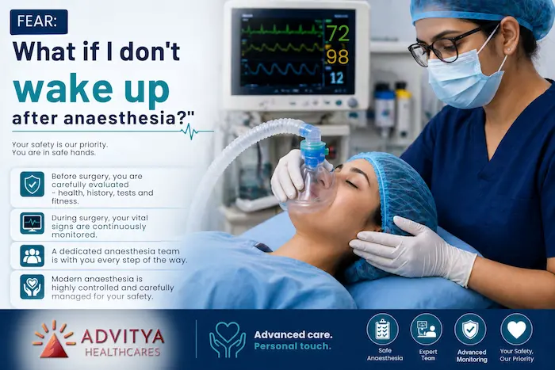
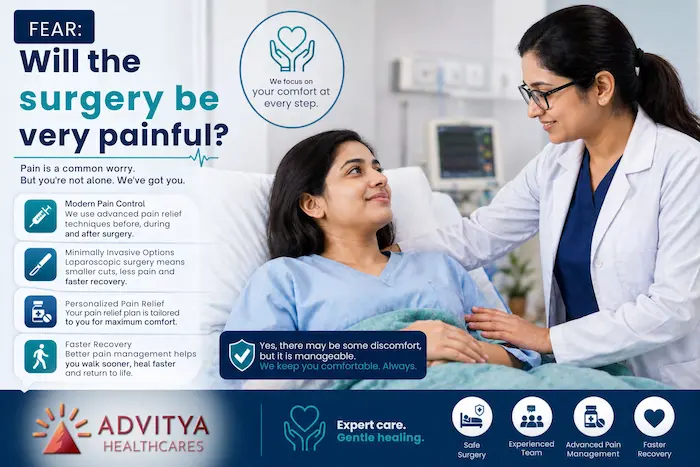
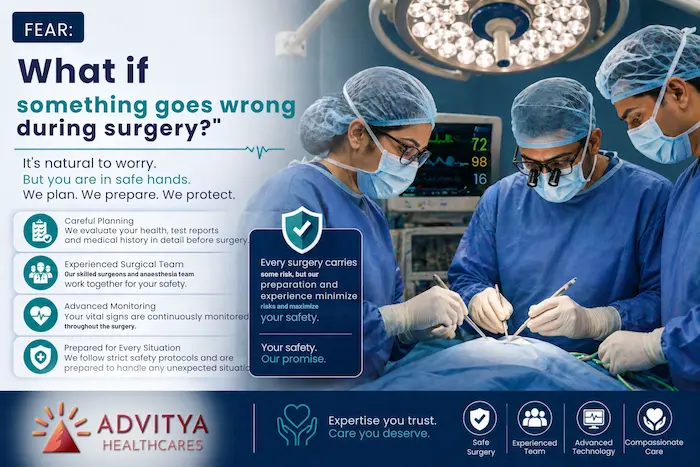
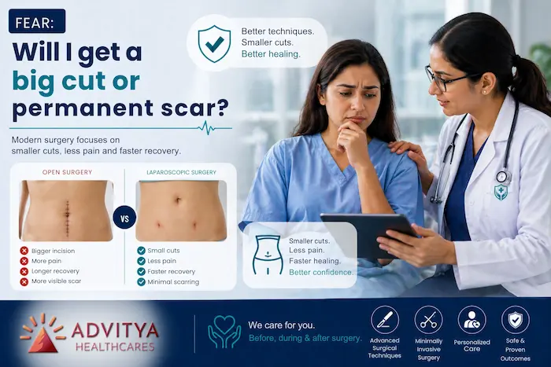
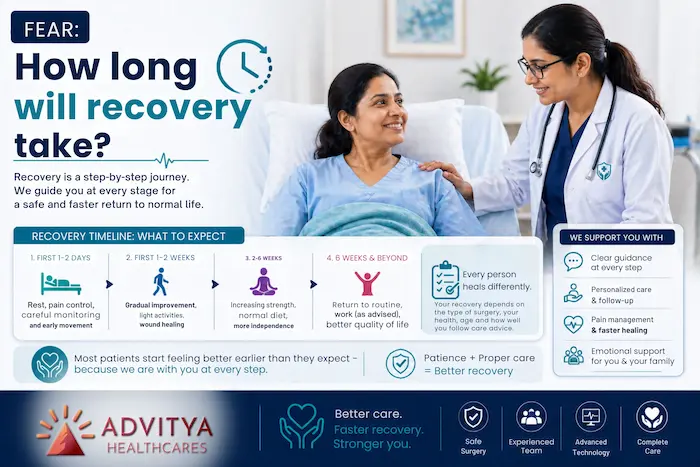
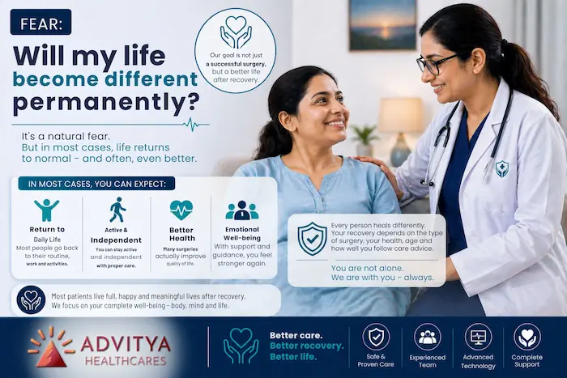
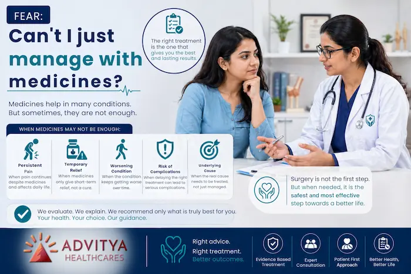

Eight fears patients raise most often in clinic, answered honestly — pain, anaesthesia, scars, recovery and the things nobody asks out loud.
For many patients and families, the word “surgery” itself creates fear.
Sometimes the fear starts the moment the doctor says,
“You may need an operation.”
And from that point, the mind begins to race:
- Will I be okay?
- Will it be very painful?
- What if I don’t wake up after anaesthesia?
- What if something goes wrong?
- How long will recovery take?
- Can’t I avoid surgery somehow?
These fears are real. They are common. And most importantly — they are completely normal.
At Advitya Healthcares and PancreaCare, we meet patients every day who are not only worried about the disease, but also deeply anxious about the surgery itself. A good surgical team understands this. Surgery is not just about the operation — it is also about preparing the patient emotionally, answering questions honestly, and guiding the family through every stage of care.
Here are some of the most common fears patients have before surgery — and what actually happens in real life.
1. Fear: “What if I don’t wake up after anaesthesia?”

This is one of the most common and most deeply personal fears.
Many patients are not actually afraid of the surgery itself — they are afraid of losing control once they are taken into the operation theatre.
What actually happens:
Before surgery, the patient is carefully evaluated. The anaesthesia team checks:
- overall health,
- blood pressure, sugar, heart condition,
- previous illnesses,
- current medicines,
- allergies, and
- test reports.
Anaesthesia is not given casually. It is planned according to the patient’s age, medical condition, and type of surgery.
During the operation, the patient is continuously monitored by trained professionals. Heart rate, oxygen level, blood pressure, breathing and other vital signs are watched throughout the procedure.
No surgery is ever called “zero risk,” but the idea that patients are simply “put to sleep and left” is not true. Anaesthesia today is a highly monitored and carefully managed part of modern surgery.
2. Fear: “Will the surgery be very painful?”

Pain is one of the first things patients imagine when they hear the word operation.
Some imagine unbearable pain for days. Others fear they will not be able to move, sit, or sleep after surgery.
What actually happens:
Yes, surgery can cause pain — but modern pain control is far better than what many people expect.
Today, surgical teams plan pain relief in advance. This may include:
- pain medicines during and after surgery,
- injections or drips in the early recovery period,
- tablets once the patient starts improving,
- and in many cases, laparoscopic surgery, which uses smaller cuts and usually causes less pain than open surgery.
The truth is, most patients describe the pain after surgery as manageable, not unbearable — especially when treatment is timely and recovery instructions are followed properly.
3. Fear: “What if something goes wrong during surgery?”

This fear often comes from hearing stories from others, reading random things online, or simply imagining the worst.
Patients may worry about bleeding, complications, infection, or “something unexpected” happening inside the OT.
What actually happens:
Every surgery carries some risk, but good surgery is all about preparation, planning, and safety.
Before the operation, the team tries to reduce risk by:
- doing the right investigations,
- understanding the disease clearly,
- checking whether the patient is fit for surgery,
- using sterile operation theatre protocols,
- and preparing for possible complications in advance.
Experienced surgical teams are trained not only to perform operations, but also to prevent, identify, and manage complications if they arise.
The most important thing for patients to understand is this:
Surgery is not advised casually.
When a good surgeon recommends an operation, it is because they believe the benefit is greater than the risk.
4. Fear: “Will I get a big cut or permanent scar?”

For many patients — especially younger patients — the thought of a large scar adds to the anxiety.
Some feel that surgery means a major cut, long bed rest, and a visible reminder for life.
What actually happens:
Not every surgery requires a large incision.
Today, many abdominal and GI procedures can be done with laparoscopic techniques, where the surgeon operates using small cuts, a c[amera, and special instruments.
In many cases, this means:
- smaller scars,
- less pain,
- less blood loss,
- shorter hospital stay,
- and faster return to daily life.
Of course, not every case is suitable for laparoscopy. Some patients still need open surgery depending on the disease, severity, previous operations, or complications. But surgical planning today is far more advanced than many people realise.
5. Fear: “How long will recovery take?”

Patients are often less worried about the operation itself and more worried about life after it.
They wonder:
- When can I walk?
- When can I eat normally?
- When can I return to work?
- Will I be dependent on others?
What actually happens:
Recovery depends on:
- the type of surgery,
- whether it was laparoscopic or open,
- the patient’s age and fitness,
- and how smoothly healing progresses.
But one thing often surprises patients:
many begin moving, walking, and recovering earlier than they expected.
In many laparoscopic procedures, patients can often start gentle movement early, eat gradually, and go back to light routine much sooner than they imagined.
Recovery is not always instant — but it is usually a step-by-step process, not a long period of helplessness.
6. Fear: “Will my life become different permanently?”

This fear is especially common in patients facing major GI surgery, cancer surgery, or operations involving the stomach, intestine, pancreas or liver.
Some worry that they will never feel normal again.
What actually happens:
The goal of surgery is usually not to “reduce” life — it is to protect it, improve it, or save it.
In some cases, surgery is done to:
- remove a painful or dangerous disease,
- prevent repeated attacks or complications,
- treat a tumour early,
- or give the best chance of long-term recovery.
Yes, some surgeries require lifestyle changes, temporary dietary adjustments, or a recovery phase that needs patience. But in many cases, patients feel better after surgery because the original problem — pain, obstruction, inflammation, bleeding, or cancer risk — has finally been addressed.
7. Fear: “Can’t I just manage with medicines?”

This is a very natural question.
Many patients hope that one more course of medicine, one more injection, or a little more waiting may help them avoid surgery altogether.
What actually happens:
Sometimes medicines are enough. Sometimes observation is safe. But not always.
There are many situations where delaying surgery can make the condition:
- more painful,
- more complicated,
- harder to treat,
- or even dangerous.
For example, repeated gallbladder attacks, untreated hernia complications, recurrent appendicitis, worsening obstruction, or some tumours may become more difficult if surgery is delayed too long.
A responsible surgeon does not recommend surgery just for the sake of operating. Surgery is advised when the team believes it is the right treatment at the right time.
8. Fear: “What if I panic before surgery?”

This is more common than people admit.
Patients may feel nervous the night before surgery, unable to sleep, emotional, or suddenly unsure.
What actually happens:
This does not mean the patient is weak. It means they are human.
Good hospitals and caring doctors understand that reassurance matters. Talking openly with your surgeon, anaesthesia team, or family can help reduce a lot of fear.
Often, what patients need most is not just another test report — it is a clear explanation:
- why the surgery is needed,
- what will happen step by step,
- what recovery may look like,
- and what support will be available afterward.
That clarity itself reduces anxiety.
Final Thoughts: Fear Is Normal, But It Should Not Stop the Right Treatment
Before surgery, fear is natural. Almost every patient feels it in some form.
But fear becomes lighter when patients understand the truth:
- Surgery is carefully planned.
- Anaesthesia is monitored.
- Pain is managed.
- Recovery is guided.
- And you are not facing it alone.
At Advitya Healthcares and PancreaCare, we believe the best surgical care is not only about technical skill — it is also about trust, communication, safety, and support.
If you or your loved one has been advised surgery, do not suffer silently with unanswered questions. Ask. Understand. Discuss. A good team will always help you feel informed, prepared, and cared for. Because when patients know what actually happens, surgery feels less like fear — and more like a step toward healing.
Have a question this article does not answer?
Send us your reports. A specialist reviews them before you travel, so the first visit begins with a plan rather than a repeat test.